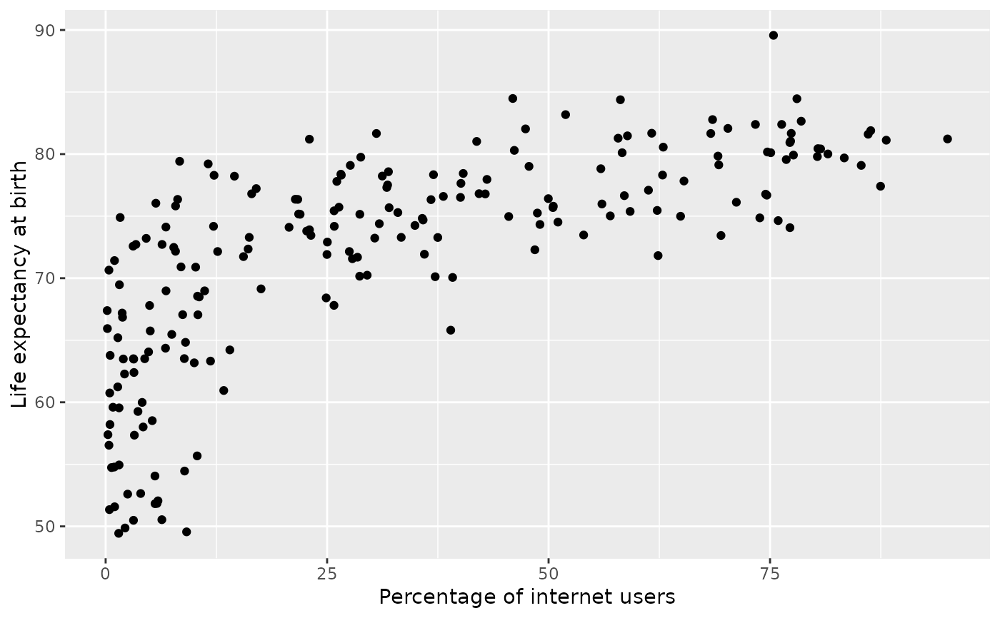

Country-level statistics from the US Central Intelligence Agency (CIA).
Format
A data frame with 259 observations on the following 11 variables.
- country
Country name.
- area
Land area, in square kilometers. (1 square kilometer is 0.386 square miles
- birth_rate
Birth rate, in births per 1,000 people.
- death_rate
Death rate, in deaths per 1,000 people.
- infant_mortality_rate
Infant mortality, in deaths per 1,000 live births.
- internet_users
Total number of internet users.
- life_exp_at_birth
Live expectancy at birth, in years.
- maternal_mortality_rate
Number of female deaths per 100,000 live births where the death is related to pregnancy or birth.
- net_migration_rate
Net migration rate.
- population
Total population.
- population_growth_rate
Population growth rate.
Source
CIA Factbook, Country Comparisons, 2014. https://www.cia.gov/the-world-factbook/references/guide-to-country-comparisons/
Examples
library(dplyr)
library(ggplot2)
cia_factbook_iup <- cia_factbook |>
mutate(internet_users_percent = 100 * internet_users / population)
ggplot(cia_factbook_iup, aes(x = internet_users_percent, y = life_exp_at_birth)) +
geom_point() +
labs(x = "Percentage of internet users", y = "Life expectancy at birth")
#> Warning: Removed 51 rows containing missing values or values outside the scale range
#> (`geom_point()`).
